Status dropdown → open status chips, prototype only: version A (two rows) and version B (one line)
Chips 18px tall (were 26), text 10px (11.5), dot 5px (7), count pill 13px / 9px text (18px / 11px). Same colours, counts and active look as the original chips.
Latest · controls 26px (= profile circle), smaller icons; status pills taller/wider (80% of the free space)
Search, Filter, Sort and Grid/List are 26px tall like the profile circle (icons 11px, search icon 13px). Version B pills: one line, always 26px tall, text shrinks when space is tight. Version A pills: two rows (18px, the most two rows allow), widened.
B · 1920
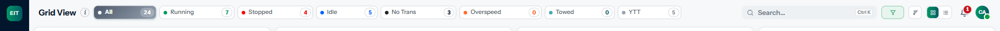
B · 1440
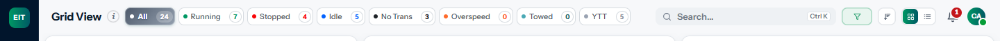
B · 1440, “Idle” selected
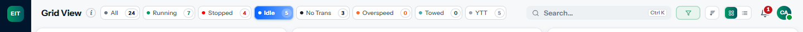
B · 1280
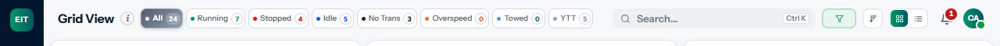
B · 1024 (two rows)
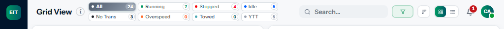
A · 1920
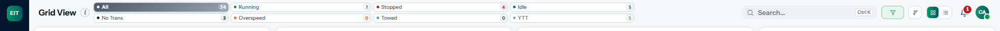
A · 1440
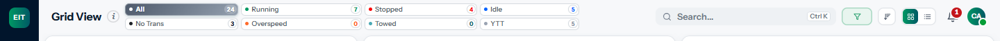
A · 1280
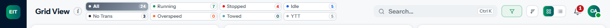
B · 1440 full page
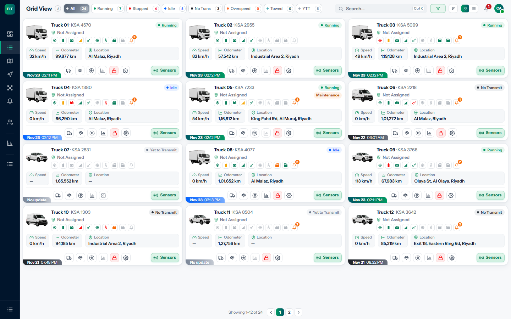
A · 1440 full page
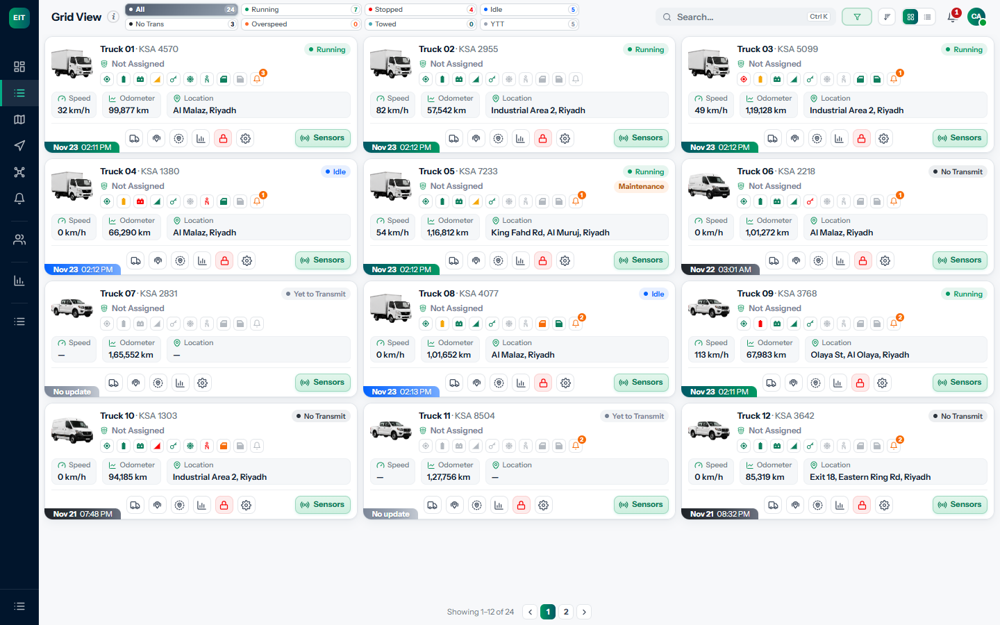
Earlier: version A (two rows) vs version B (one line): header close-ups
1920 · A (2 rows)
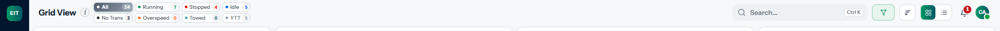
1920 · B (one line, chips 22px / 10.5px text)
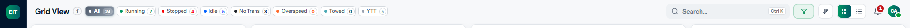
1440 · A
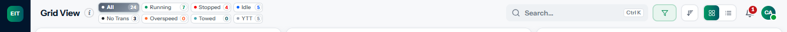
1440 · B (one line, 22px / 10.5px)
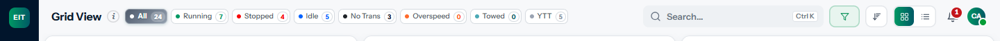
1440 · B, “Stopped” selected
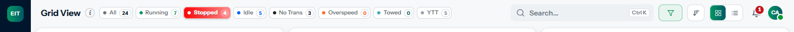
1280 · A
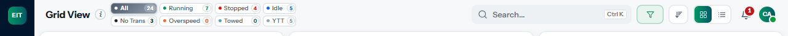
1280 · B (one line, compact 18px / 9.5px)
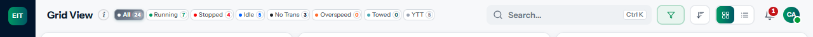
1024 · B (not enough room for one line: falls back to A’s two rows)